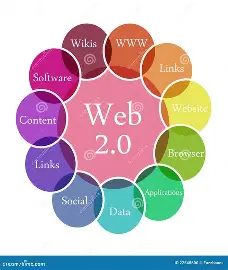

Web 2.0

Web 2.0 refers to the second generation of the World Wide Web, which focuses
on user interaction, collaboration, and content sharing. It is commonly known
as the "read-write web" because users can both consume and create content.
Unlike Web 1.0, where websites were static, Web 2.0 introduced dynamic and
interactive platforms. Users can communicate, share information, and
participate actively through blogs, social media, and other web applications.
Characteristics of Web 2.0
- Interactive and dynamic web pages
- User-generated content
- Social networking and collaboration
- Rich user interfaces and multimedia support
- Real-time communication and updates
Examples of Web 2.0
- Social media platforms (e.g., Facebook, Twitter)
- Blogs and online forums
- Video sharing websites (e.g., YouTube)
- Collaborative platforms (e.g., Wikipedia)
Advantages
- Encourages user participation and engagement
- Facilitates communication and collaboration
- Allows easy sharing of information and media
- Supports interactive and user-friendly designs
Limitations
- Privacy and security concerns
- Spread of misinformation
- Dependence on internet connectivity
In summary, Web 2.0 transformed the internet into a more interactive and
social environment, allowing users to actively participate rather than just
consume information.